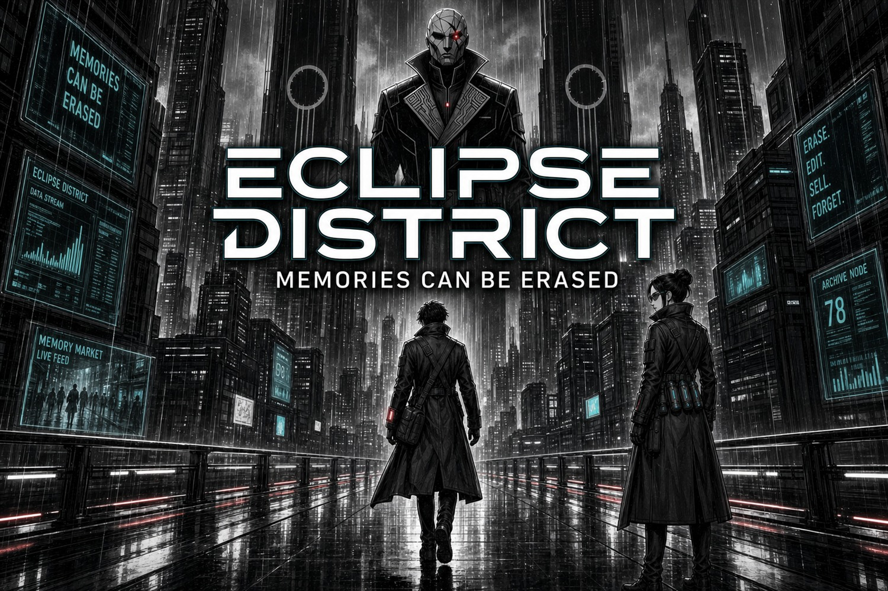
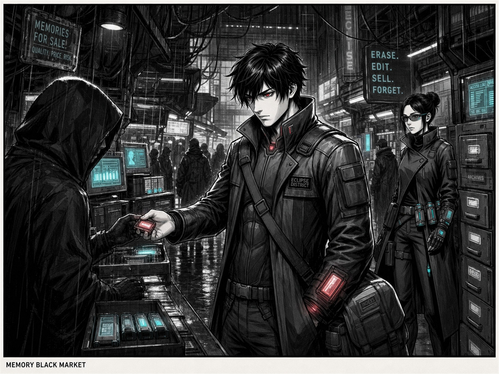
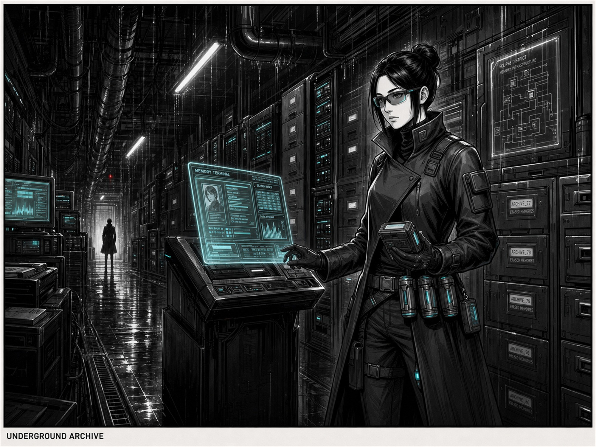
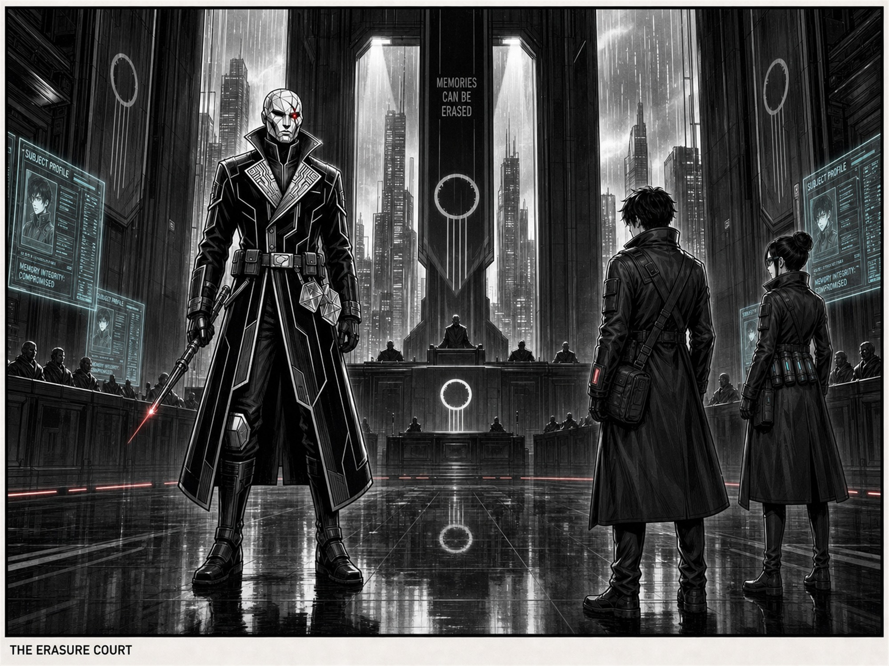
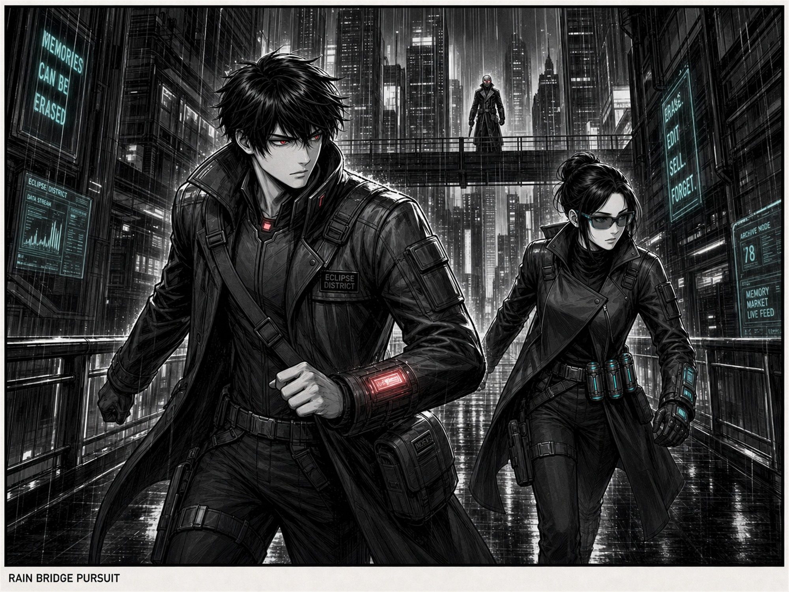
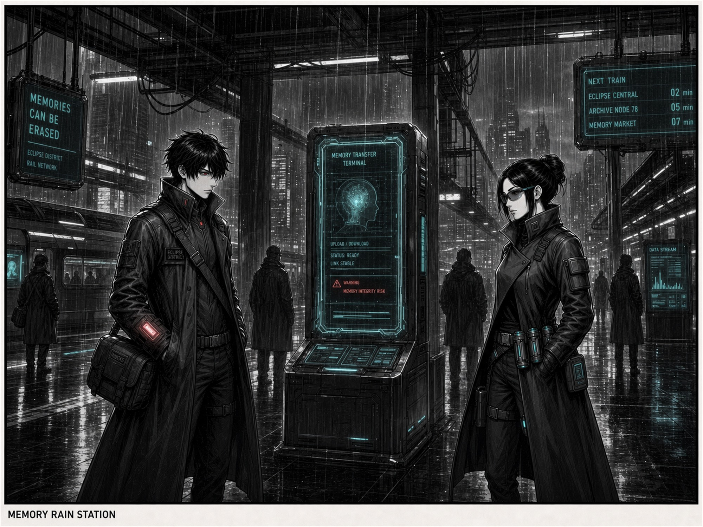
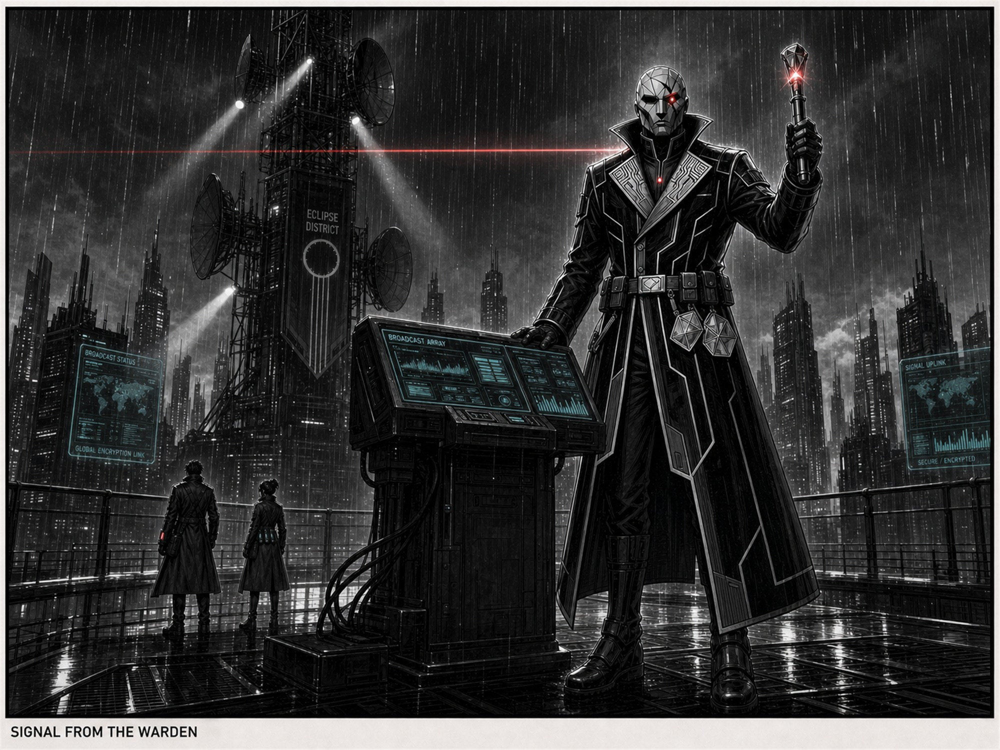
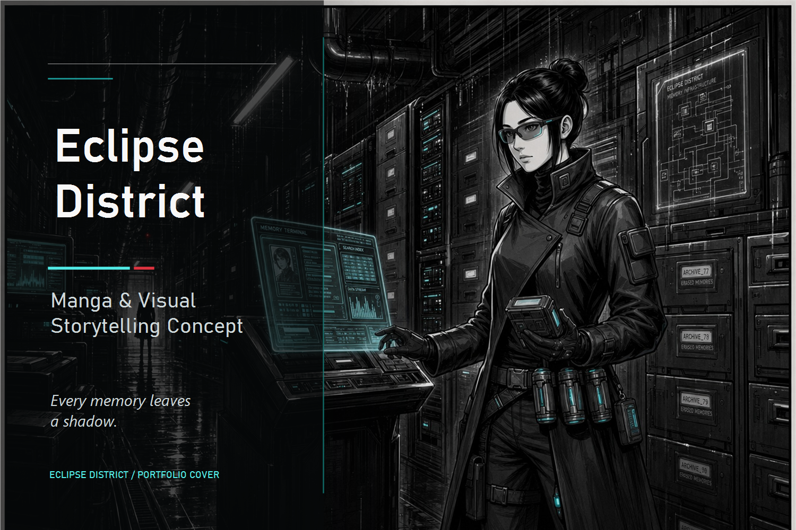

Memory Economy
Memories exist as tradable data objects, creating black markets, archive terminals, transfer stations, and institutional systems of control.
Creative Direction · Visual Storytelling · Concept Development
A cinematic manga-inspired psychological sci-fi world where memories can be stored, traded, altered, and erased.
Eclipse District is a self-initiated visual storytelling concept created to demonstrate worldbuilding, character consistency, cinematic art direction, and portfolio-ready presentation.

Overview
Eclipse District imagines a futuristic noir city where memory has become an underground currency. People store memories, trade them, alter them, and erase what they can no longer carry.
The project focuses on premium black-and-white manga illustration, dense urban sci-fi environments, rain-soaked reflections, dramatic shadow, and a restrained red/cyan accent system that signals control, memory devices, archive tools, and danger.
Worldbuilding
Memories exist as tradable data objects, creating black markets, archive terminals, transfer stations, and institutional systems of control.
The city is vertical, wet, industrial, and crowded with signage, elevated bridges, surveillance arrays, and reflective architecture.
The tone is mature and restrained, centered on identity, loss, coercion, and the fear that personal history can be rewritten.
Every scene uses consistent wardrobe, devices, accent colors, rain, lighting, and urban density to make the concept feel like one coherent story world.
Character System
A reserved young memory courier with messy black hair, a high-collar tactical coat, cross-body strap, utility bag, red cybernetic eye, and wrist memory device.
A composed underground archivist with black hair in a bun, cyan-accented tech glasses, gloves, belt canisters, archive tools, and a controlled visual presence.
An imposing masked authority figure with a faceted geometric mask, black hollow eyes, a single red control LED, long structured coat, circuit-like lapels, and command device.
The characters are differentiated by accent color, silhouette, posture, tools, and narrative role while sharing the same noir tactical wardrobe language.
Visual Language
Narrative Gallery






Portfolio Presentation


Outcome
The final project demonstrates creative direction across narrative worldbuilding, character design consistency, cinematic composition, monochrome visual hierarchy, restrained color signaling, and premium portfolio packaging.